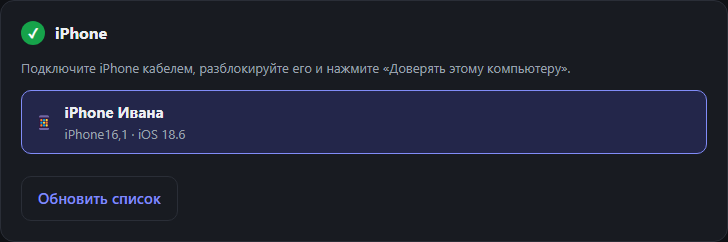

Первый запуск на Windows, macOS и Linux
Драйверы, предупреждения SmartScreen и Gatekeeper, команды для Linux.
Windows 10/11
- Установите Apple Devices из Microsoft Store или iTunes.
- Запустите
VozvratSetup.exe. Права администратора не нужны: программа ставится в%LOCALAPPDATA%\Programs\Vozvrat. - Инсталлятор не подписан цифровой подписью, поэтому SmartScreen может показать «Неизвестный издатель». Нажмите «Подробнее», затем «Выполнить в любом случае».
Окно программы работает на Microsoft Edge WebView2 — в Windows 10 и 11 он обычно уже есть. Если вместо программы появилось сообщение «Не удалось открыть окно программы», установите или обновите WebView2 Runtime.
macOS 12+
- Откройте
.dmg(Apple Silicon или Intel) и перетащите «Возврат» в «Программы». - Программа не подписана сертификатом Apple, поэтому первый запуск macOS заблокирует. Откройте «Системные настройки» → «Конфиденциальность и безопасность» и нажмите «Всё равно открыть» — или выполните в Терминале:
При первом подключении iPhone нажмите на телефоне «Доверять этому компьютеру».
Проверьте, что всё работает
На любой системе после запуска подключите iPhone. Если драйвер на месте, телефон появится в блоке «iPhone».

Linux x86_64
Установите usbmuxd (Ubuntu/Debian):
В Fedora — sudo dnf install usbmuxd, в Arch — sudo pacman -S usbmuxd. Затем сделайте AppImage исполняемым и запустите:
Если AppImage не запускается из-за FUSE, распакуйте Vozvrat-Linux-x64.tar.gz и запустите Vozvrat/Vozvrat. На Linux интерфейс открывается во вкладке браузера, а программа сама завершается через несколько минут после закрытия вкладки, если ничего не устанавливается.
Обновления программы
Ставить новые версии вручную больше не нужно: при выходе новой версии «Возврат» покажет окно с кнопкой «Обновить» и обновится сам. Для этого на macOS программа должна лежать в «Программах», а на Linux — в папке, куда у вас есть права на запись. Подробнее об обновлениях.
Вернуть приложение на iPhone
Бесплатно, с открытым исходным кодом, для Windows, macOS и Linux.
Скачать «Возврат»